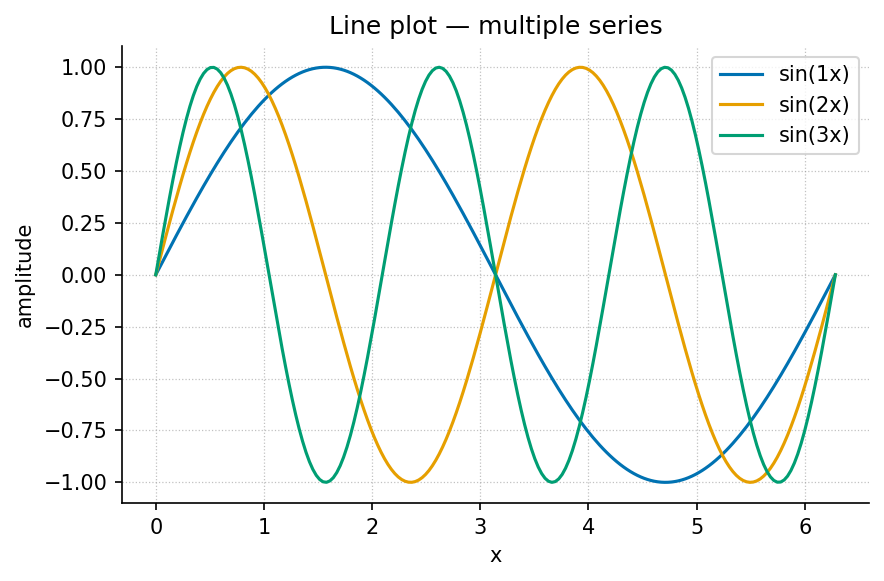
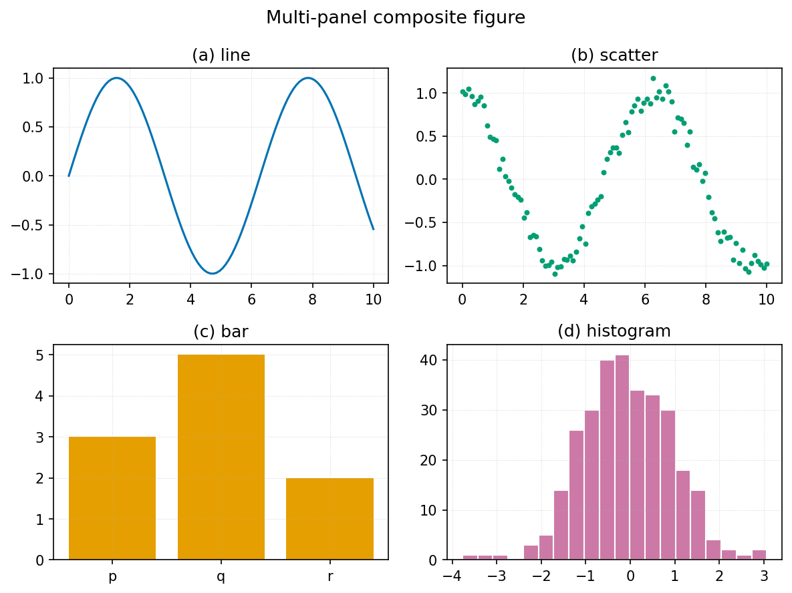

Appendix — Format Gallery
This appendix is a kitchen-sink demonstration: a
working example of every content primitive this template supports. Copy
any block into a chapter and adapt it. Each example is real and renders
through the standard pipeline; figures are produced deterministically by
src/visualization/ and embedded from
../figures/.
How to read this appendix. Headings group primitives by kind: text, lists, callouts, tables, math, figures, diagrams, code, cross-references, media, and pedagogy blocks. The Markdown source is the example — view it next to the rendered output.
1. Text and inline formatting
Plain paragraph text wraps and flows normally. Inline styles:
bold, italic, bold
italic, inline code,
strikethrough, H2O with a subscript, E =
mc2 with a superscript, and a footnote.1
You can hard-break a line with an explicit <br>
element,
or separate paragraphs with a blank line. Escape literal
Markdown with a backslash: *not italic*.
2. Lists
Unordered, with nesting:
- First item
- Second item
- Nested item
- Another nested item
- Third level
- Third item
Ordered:
- Step one
- Step two
- Sub-step a
- Sub-step b
- Step three
Task list (renders as checkboxes in many targets):
Definition list:
- Parameter
- A fixed quantity that configures a model (see parameter).
- Variable
- A quantity that changes across states (see variable).
3. Block quotes and callouts
A plain block quote:
“Form follows function.” Use quotes for epigraphs and primary-source extracts.
Portable callouts (a bold label inside a block quote — renders in every target):
Note. A neutral aside that adds context.
Tip. A practical suggestion the reader can act on.
Warning. A caveat, common error, or safety note.
Example. A short worked illustration inline in the text.
Definition. A precise statement of a term, often paired with a glossary entry such as equilibrium.
Pandoc fenced-div callout (richer styling where supported; falls back gracefully):
This is a Pandoc fenced div. If your render profile
styles .callout-note, it appears as a boxed admonition;
otherwise it renders as a normal block.
4. Tables
A simple table with column alignment and a cross-referencable caption ([tbl:gallery_alignment]):
: Column alignment — left, centre, right. {#tbl:gallery_alignment}
The values below are mirrored in
manuscript/assets/data/format_gallery.csv so rendering
examples remain evidence-addressable fixtures rather than anonymous
literals.
| Left | Centre | Right |
|---|---|---|
| alpha | 1 | 10.0 |
| beta | 22 | 2.5 |
| gamma | 333 | 0.125 |
A multi-line / grid table (cells may contain longer wrapped text):
| Symbol | Meaning | Typical range |
|---|---|---|
| \(r\) | intrinsic rate of change | 0.1 – 2.0 |
| \(K\) | carrying capacity / saturation level the system approaches | problem- dependent |
5. Mathematics and units
Inline math: the half-life is \(t_{1/2} = \ln 2 / \lambda\).
A numbered display equation, cross-referenced as [eq:gallery_logistic]:
\[ N(t) = \frac{K}{1 + \left(\dfrac{K - N_0}{N_0}\right) e^{-rt}} \] {#eq:gallery_logistic}
Multi-line aligned derivation:
\[ \begin{aligned} \frac{dN}{dt} &= rN\left(1 - \frac{N}{K}\right) \\ &= rN - \frac{r}{K}N^2 . \end{aligned} \]
A matrix and a piecewise definition:
\[ \mathbf{A} = \begin{bmatrix} a_{11} & a_{12} \\ a_{21} & a_{22} \end{bmatrix}, \qquad f(x) = \begin{cases} 0 & x < 0 \\ 1 & x \ge 0 . \end{cases} \]
Physical quantities with units, written in math mode so they render
in every target (PDF, HTML, slides): a rate of \(0.5\ \mathrm{s^{-1}}\), a length of \(2.0\ \mathrm{m}\), and a concentration of
\(1.5\ \mathrm{mol\,L^{-1}}\). (For
PDF-only builds you may instead use siunitx macros such as
\SI{0.5}{\per\second}, which the preamble loads — but
math-mode units are the portable choice.)
6. Figures
A single figure with caption, label, and alt text, cross-referenced as [fig:gallery_line]:

visualization.gallery.line_plot.Two figures side by side (Pandoc fenced div; falls back to stacked):


A multi-panel composite ([fig:gallery_multipanel]):

The full plot-type gallery lives in ../figures/gallery/
and includes: line, scatter-with-fit, bar, grouped bar, horizontal bar,
histogram, box, violin, heatmap, contour, quiver field, step, stacked
area, error bars, log-log, pie, annotated, and multi-panel.
7. Diagrams (Mermaid)
The pipeline renders fenced mermaid blocks to figures
(and falls back to the .mmd source if the Mermaid CLI is
absent). One worked example of each kind the builders in
src/mermaid/diagrams.py support:
Flowchart:
graph TD
A[Inputs] --> B[Model]
B --> C[Predictions]
C -->|revise| ASequence:
sequenceDiagram
participant Author
participant Engine
Author ->> Engine: edit config.yaml
Engine -->> Author: rendered PDFState:
stateDiagram-v2
[*] --> Stub
Stub --> Drafted: fill
Drafted --> Reviewed: review
Reviewed --> [*]: publishClass:
classDiagram
class ChapterRef {
+str part_id
+str file
+stem() str
}
ChapterRef --> TocEntry : numbered asEntity-relationship:
erDiagram
PART ||--o{ CHAPTER : contains
CHAPTER ||--|| LAB : hasPie, Gantt, mindmap, timeline, quadrant, and user-journey diagrams
are also supported — see src/mermaid/diagram_specs.yaml for
a worked spec of each.
8. Code
Inline code: call
textbook.models.logistic_growth(t, r=..., ...).
A fenced code block with a language (syntax-highlighted) and a caption ([lst:gallery_code]):
from textbook import models
import numpy as np
t = np.linspace(0, 10, 100)
n = models.logistic_growth(t, r=0.8, carrying_capacity=100.0, initial=5.0)
print(n[-1]) # -> approaches the carrying capacityA shell example:
uv run python scripts/generate_figures.py
uv run --extra dev python -m pytest tests/ --cov=src9. Cross-references and citations
Cross-references resolve by label: figure [fig:gallery_line], table [tbl:gallery_alignment], equation [eq:gallery_logistic], and section [sec:appendix_formalisms]. Never hand-number — Pandoc fills these in.
Citations resolve against references.bib: a single
source [smith2020foundations], multiple sources [doe2019methods;
lee2021systems], and an in-text form — @garcia2022dynamics showed the
effect first. A locator narrows the reference [patel2018models].
10. Media and data
Embedded raster image (any PNG/JPG works the same way as a figure):

Audio and video embed in HTML targets (PDF shows the caption + link). Syntax:

{width=70%}A downloadable data file lives at assets/data/sample_dataset.csv;
its contents as a table:
| condition | replicate | measurement | standard_error |
|---|---|---|---|
| control | 1 | 2.10 | 0.20 |
| control | 2 | 2.30 | 0.18 |
| treatment_low | 1 | 3.60 | 0.25 |
| treatment_high | 1 | 4.80 | 0.35 |
The error-bar figure [fig:gallery_errorbar] visualises this kind of data:

11. Pedagogical blocks
These are the reusable teaching elements chapters draw on.
Learning objective. After this section a reader can identify which Markdown primitive to use for a given purpose.
Worked example. Given \(r = 0.8\), \(K = 100\), \(N_0 = 5\), evaluate \(N(10)\) via [eq:gallery_logistic] using
textbook.models.logistic_growth. The result approaches \(K\).
Try it. Change \(r\) to \(1.5\) and predict, then check, how the curve shifts.
Summary. This appendix demonstrated text, lists, callouts, tables, math and units, figures, diagrams, code, cross-references, media, and pedagogy blocks — the complete primitive set.
12. Miscellany
A horizontal rule separates major shifts in topic (three or more dashes):
Raw inline HTML is supported only inside
<details>, <aside>, or
<callout> per project style; everything else uses
Markdown. Unicode renders directly: α, β, γ, Δ, ∑, ∞, ≈, →. For PDF
math, prefer LaTeX ($\alpha$) over raw Unicode in
equations.
Footnotes collect at the end of the document (or page, in PDF). Use them for asides that would interrupt the sentence.↩︎